The drive into Soledad is a peek into California's unknown wine country. We pivot from the coast heading inland, straight into agricultural land.
Rolling green hills slope down into green fields of various crops, from rice to grapes. The roads are single-lane and quiet, and the earth is sunny and dry today.
The Soledad Mission is in outskirts of Soledad, about 7 kilometres out. The parking lot is bare sand, reminiscent of an old California that was once just sand and mountain. The Mission itself is rebuilt -- as most are -- but there is no entry fee, and very few people. It preserves an anachronistic, quiet desert solace of a late 1800's imagination of California throughout.
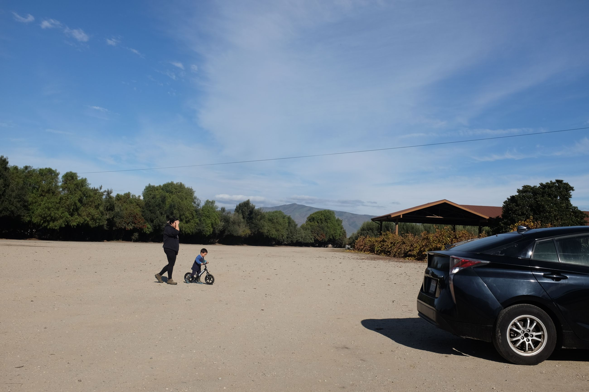 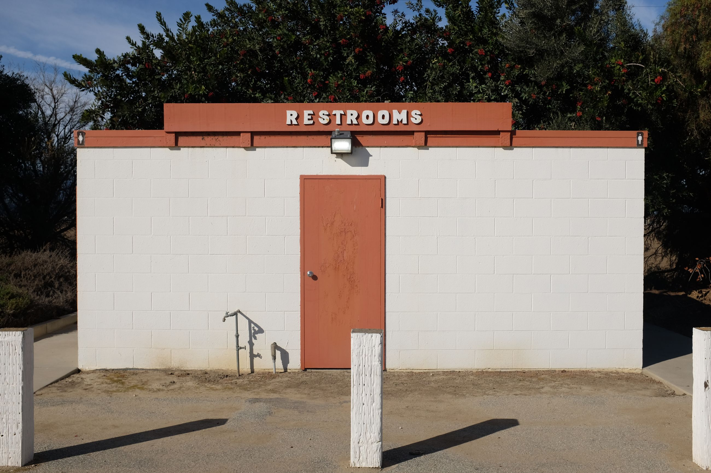 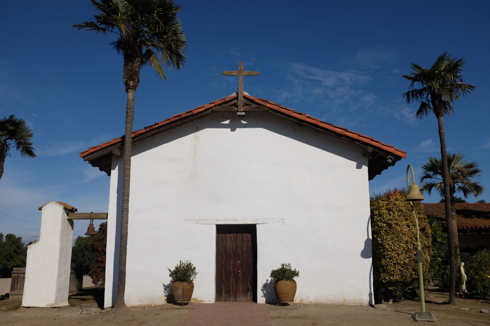 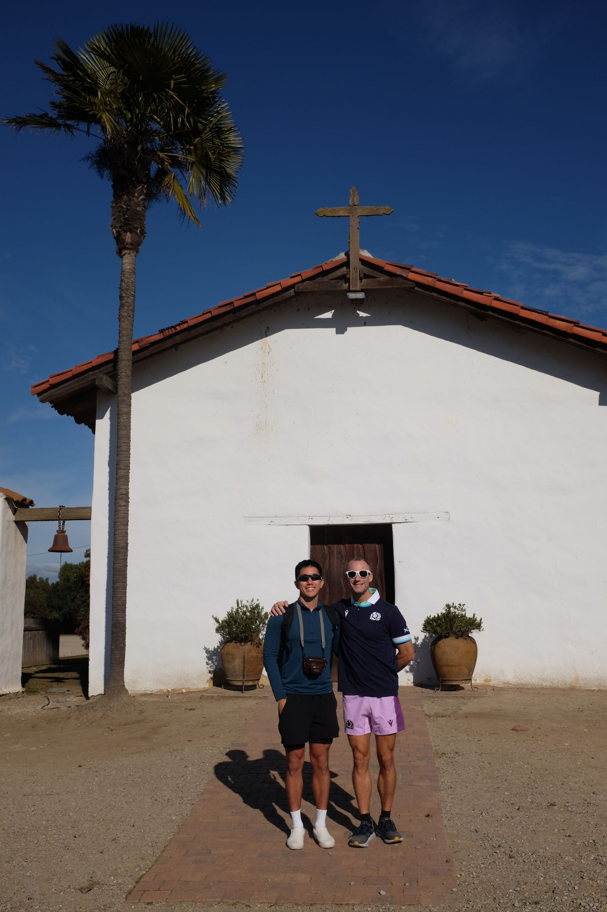
The museums inside are fashioned with motion-censored lights and tell the story of the Native Americans, Spanish and Mexicans who have passed through these old halls. The outside is curated like a garden for one to sit in. Seems like it would've been a good place to rest and worship back in the day.
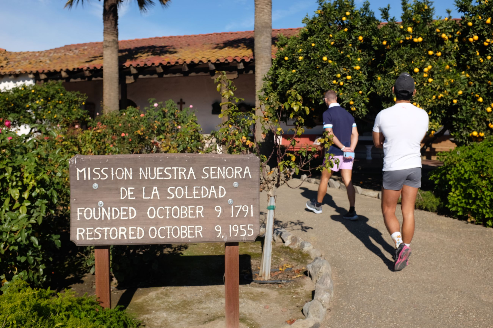 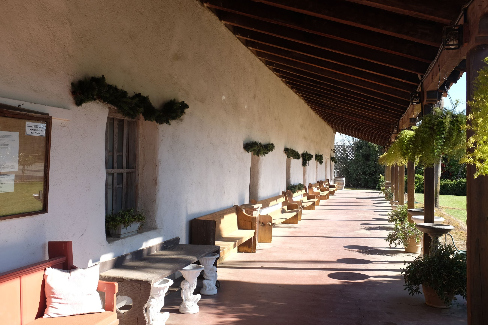
We are greeted by a wonderful shop attendant who grew up on the farms nearby. She told us about growing up around in the country, and just having moved to Soledad (the "city" she says). She complained about her neighbours their generally poor etiquette around parking, and knew most of the people in town. Said that the post office -- where I was heading -- was "cool, depending who worked there". Apparently, Jose and David are not bad guys.
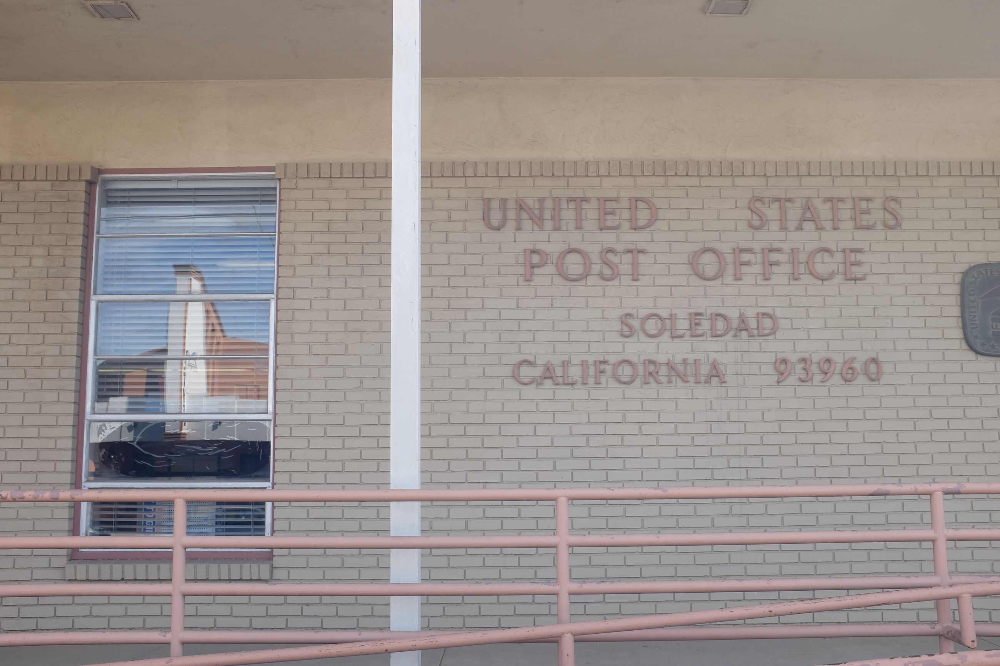
After the mission we head into this so-called Soledad town she spoke of. It felt like a quiet town in Mexico, with one high street and low rise buildings -- the quintessential California concept of the desert strip mall. We stop by a place called Napolitos for tacos, swing by the toursit centre, then we are off on our way to the next Mission: San Antonio de Padua in
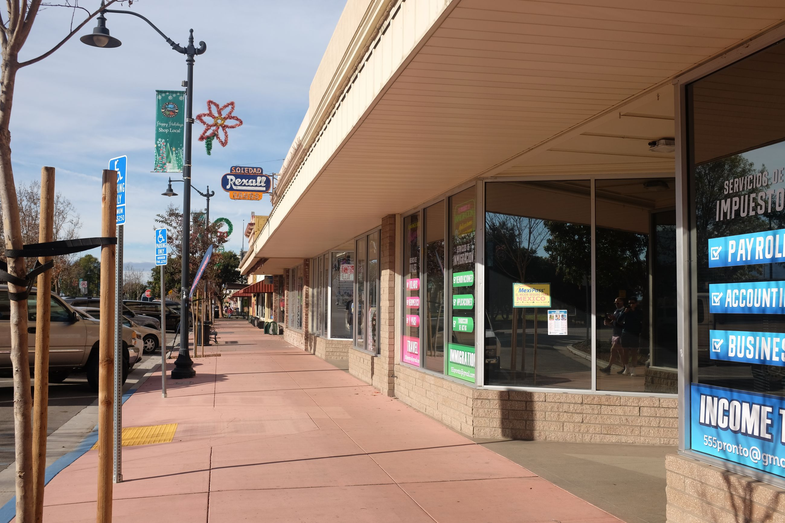 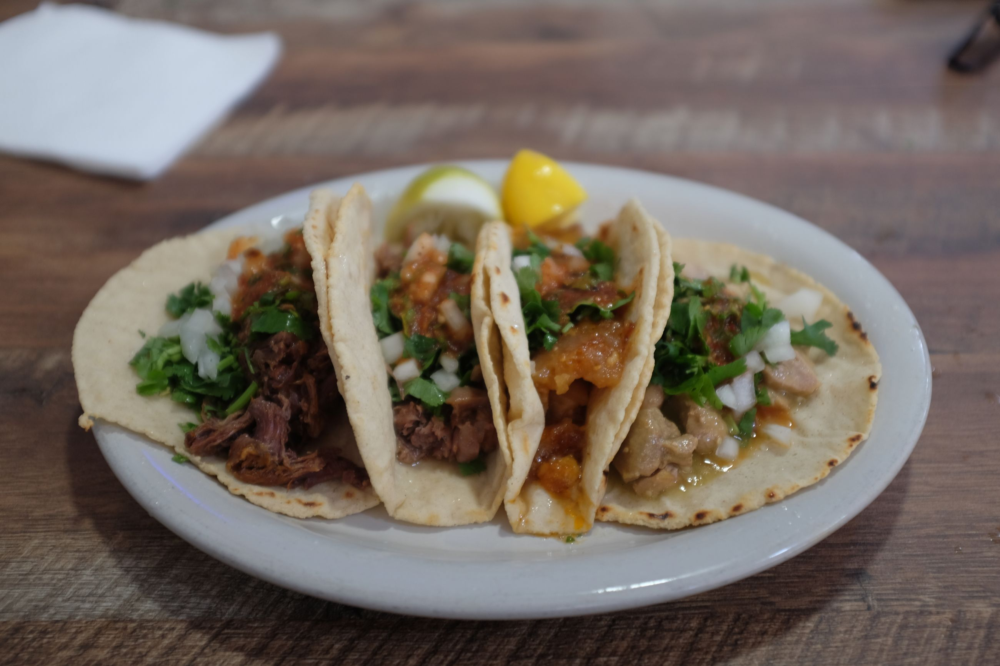 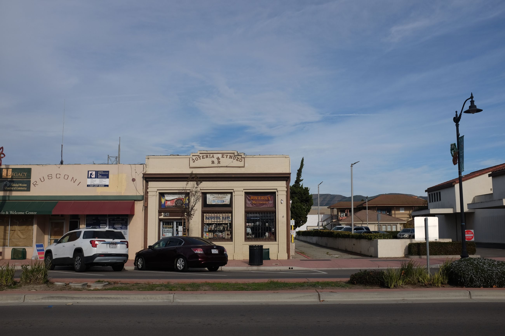 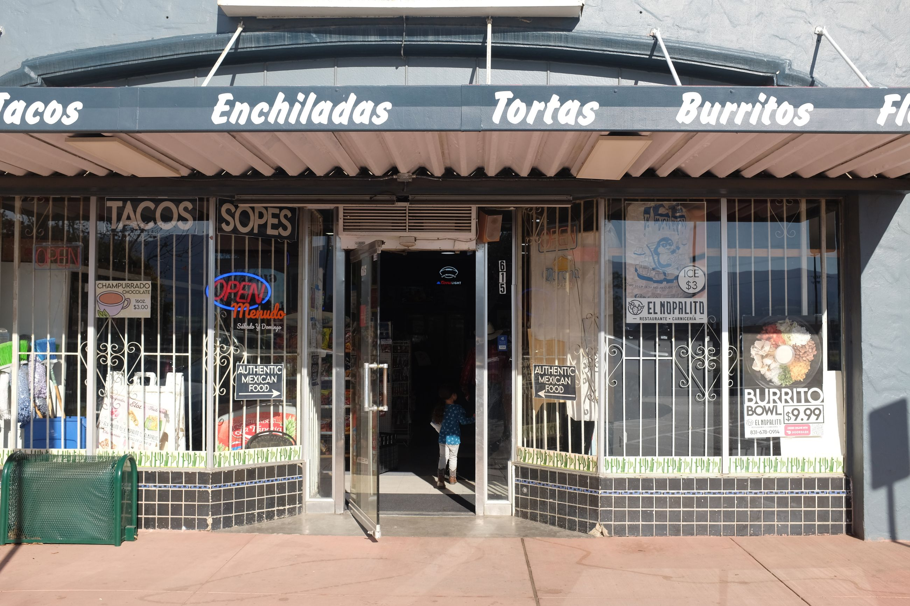